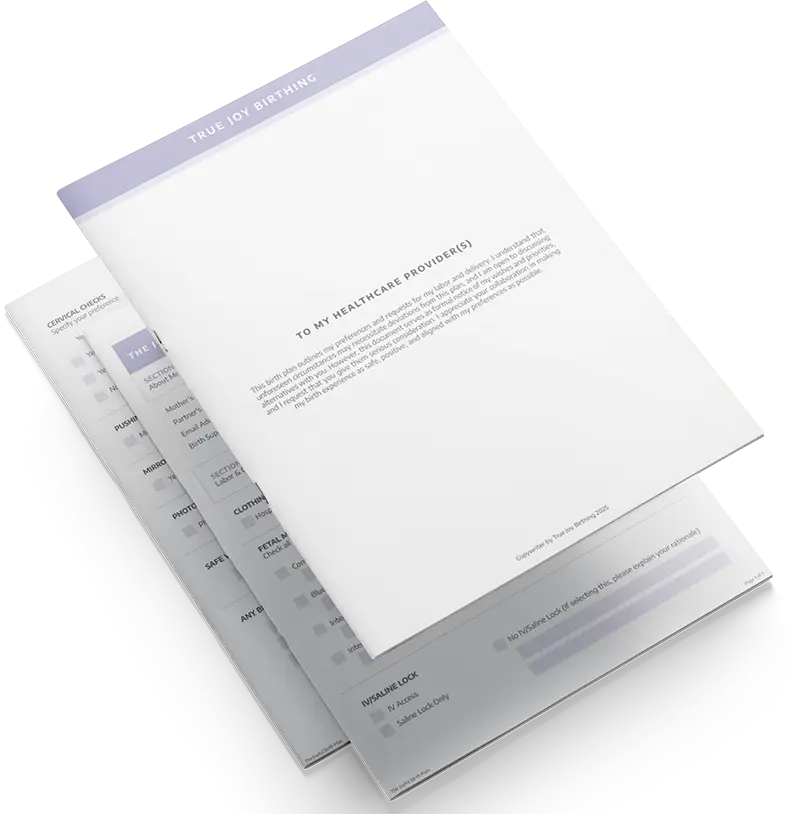

Birth Plan
Week by Week
Find a Doula
Courses
Get the App
Free · Doula-crafted · Judgment-free
Build your joyful birth plan — and grow through every week
The free app that walks with you from the first blush of pregnancy to the first cry. A doula-crafted birth plan in about 20 minutes, week-by-week guidance that grows with your baby, and a directory of verified doulas, midwives, and lactation specialists near you — see how much a doula costs in your area, or jump straight to your city.
Get the free app
See the walkthrough

Built with doulas
Judgment-free
Real doula guidance
Weekly rhythm
100% free for moms
What You Get
Everything you need, nothing you don't
The Joyful Birth Plan app — one calm home for your pregnancy, your plan, and your people. Here's what's inside.
The Joyful Birth Plan
A doula-crafted plan that walks you through every decision — pain management, support people, hospital preferences, feeding plans — free, guided, and ready to share with your care team.
Week by week, with you
Your week's illustration, your baby's size in everyday comparisons, one practical tip, one affirmation — a weekly rhythm that builds the daily-open habit and grows a garden alongside your pregnancy.
Find your team
Search real, verified doulas, midwives, and lactation specialists near you — filter by services, certification, Medicaid, and language, then message them right in the app.
Start With Your Date
Find your week, starting today
Enter your due date and the app drops you into your current week — illustration, tip, affirmation, and checklist already waiting.
When is your baby due?
We'll estimate your current week and show you exactly what's happening — your baby, your body, and your birth plan for this exact stage.
Due date — MM / DD / YYYY
Show my week
Week 28
3rd Trimester · Leafing
Your baby is about the size of an eggplant — and this week's plan section covers pre-registration and birth preferences.
The Growth Motif
A motif that grows with her
Every surface carries one hand-drawn language of growth — simple stems, leaves, buds, blossoms — so the design itself grows as the pregnancy does.
Sprout
Weeks 4–14
beginnings
Leafing
Weeks 15–27
growing
Budding
Weeks 28–36
almost there
Blossom
Weeks 37–40
arrival
Find Your City
Birth support in your city
Local guides for the cities we know best — real costs, real hospitals, real providers. 187 cities and counting.
Austin, TX
8 doulas listed · $1,000–3,000 typical
D
Denver, CO
12 doulas listed · $1,200–3,500 typical
N
Nashville, TN
6 doulas listed · $900–2,400 typical
Keep Learning
Guides for every step of the way
Deep, doula-written guides on every part of the journey — the reading list behind the app.
Birth Plan Template
Free template built by a doula. Download and fill it out.
What Is a Doula
What doulas do, how they help, and why families hire one.
Doula Cost Guide
What doulas cost, what's included, and insurance coverage.
Doula vs Midwife
Key differences between doulas and midwives, and which you need.
Hospital Birth Plan Guide
What to include for a hospital birth, section by section.
Medicaid Doula Coverage
Which states cover doula services and how to access benefits.
VBAC Birth Plan Guide
Planning a vaginal birth after cesarean, with sample language.
New Doula Start Here
Everything a new doula needs to build their practice.
"We came for the birth plan. We stayed because every week, something in the app grew right along with our baby."
— Austin mom, week 34
Your joyful birth plan starts tonight
Free, doula-crafted, about 20 minutes. Then every week after, the app grows with you — week by week, leaf by leaf.
Get the free app
See the walkthrough

Judgment-free birth support · Built with doulas